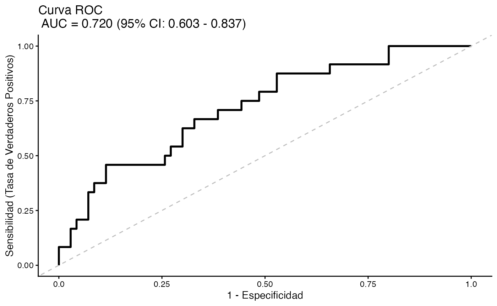

Introducción a BioEstatR
Pedro Femia Marzo, Miguel Angel Luque Fernandez
2026-06-01
BioEstatR-overview.Rmd
library(BioEstatR)
#> --------------------------------------------------------------
#> BioEstatR (ver 1.0.1 - 05/2026)
#> Biostatistics Routines in R
#> Pedro Femia*, Miguel Angel Luque Fernandez
#> Biostatistics Faculty of Medicine - University of Granada
#>
#> * Contacto: pfemia@ugr.es, mluquefe@ugr.es
#> --------------------------------------------------------------
data(osteo)Introducción
Este paquete proporciona una colección de rutinas estadísticas automatizadas para el análisis descriptivo, y la estadística inferencial clásica, desarrolladas como soporte para el libro Matemática Estadística Médica con R.
Todas las funciones han sido actualizadas en la versión 1.0.1 con referencias científicas a la literatura estadística fundamental para apoyar su uso y metodología.
Uso
A continuación se muestran ejemplos básicos de uso de las funciones principales para la modelización lineal y logística.
Regresión Lineal Simple
# Ejemplo de regresión lineal simple
rls(imc ~ peso, data = osteo, grf=F)
#>
#> Regresión lineal simple
#> ----------------------------------------------------------------
#> # Información muestral ---
#>
#> variable n media dt Min Max Rango
#> 1 imc 94 23.921 3.748 18.07 37.333 19.264
#> 2 peso 94 63.839 11.804 44.60 99.000 54.400
#>
#> Cov(imc,peso) = 35.482
#>
#> # Correlación de Pearson ---
#>
#> r IC_inf IC_sup gl texp sig
#> 0.802 0.716 0.864 92 12.876 < 0.001
#>
#> # Modelo lineal ---
#>
#> Modelo: imc ~ peso
#> R² = 0.643
#> S²residual = 5.068
#> :
#>
#> Coef estim se ic_inf ic_sup texp sig
#> 1 (Constante) 7.664 1.284 5.115 10.214 5.971 <0.001
#> 2 peso 0.255 0.020 0.215 0.294 12.876 <0.001
#>
#> # Distribución residual ---
#> Error estándar residual: 2.251
#> res zres
#> min -5.763 -2.620
#> Q1 -1.533 -0.685
#> Q2 -0.512 -0.230
#> Q3 1.426 0.649
#> max 8.279 3.757
#>
#> Test de normalidad residual (Shapiro-Wilk):
#> w =0.96, p= 0.005Regresión Lineal Múltiple
# Ejemplo de regresión lineal múltiple
new_data <- data.frame(peso = c(70, 80), talla = c(170, 180))
rlm(imc ~ peso + talla, data = osteo, pred = new_data, grf=F)
#>
#> Regresión lineal múltiple
#> ----------------------------------------------------------------
#> # Información muestral ---
#>
#> Variable n Media DT Min Max
#> imc imc 94 23.921 3.748 18.07 37.333
#> peso peso 94 63.839 11.804 44.60 99.000
#> talla talla 94 163.181 8.795 144.00 190.000
#>
#> # Modelo lineal ---
#>
#> Modelo : imc ~ peso + talla
#> R² = 0.988 (R² ajustado = 0.988 )
#> S²residual = 0.17
#>
#> Coeficientes del modelo :
#>
#> Termino Estimacion Error_Std IC_inf IC_sup t_exp sig
#> 1 (Intercept) 48.884 0.835 47.225 50.543 58.522 < 0.001
#> 2 peso 0.380 0.004 0.371 0.389 86.971 < 0.001
#> 3 talla -0.302 0.006 -0.313 -0.290 -51.431 < 0.001
#>
#> # Pronósticos con el modelo ---
#> Pronosticos puntuales y bandas al 95 % de confianza para
#> promedios IC(m), y para una nueva observación: IC(obs)
#>
#> peso talla Puntual IC_m_inf IC_m_sup IC_obs_inf IC_obs_sup
#> 1 70 170 24.20513 24.09751 24.31276 23.37811 25.03216
#> 2 80 180 24.98938 24.80351 25.17525 24.14859 25.83018
#>
#> # Distribución residual ---
#> Error estándar residual: 0.413
#> Residuos Res_Est
#> min -1.411 -3.587
#> Q1 -0.180 -0.442
#> Q2 0.042 0.102
#> Q3 0.186 0.456
#> max 1.773 4.620
#>
#> Test de normalidad residual (Shapiro-Wilk):
#> w = 0.926 , < 0.001Regresión Logística Simple
# Ejemplo de regresión logística simple
rlogits(osteo_cue ~ imc, data = osteo)
#> Waiting for profiling to be done...
#>
#> Regresión logística simple
#> ----------------------------------------------------------------
#> # Información muestral ---
#>
#> Tamaño muestral (N inicial) : 94
#> Tamaño muestral tras eliminar valores perdidos (Casos completos) : 94
#> Mínima frecuencia de eventos (n efectivo) : 24
#>
#> # Distribución de la variable respuesta (osteo_cue) ---
#>
#> Categoria n Porcentaje
#> 1 No 70 74.468
#> 2 Sí 24 25.532
#>
#> # Modelo logístico --- ---
#>
#> Modelo : osteo_cue ~ imc
#> Devianza residual: 100.176 (Nula: 106.804 )
#> AIC: 104.176
#> R² de Nagelkerke: 0.1
#>
#> Test de bondad de ajuste de Hosmer-Lemeshow :
#> X² = 7.041 , gl = 8 , = 0.532
#>
#> Capacidad discriminante :
#> AUC (Area bajo la curva ROC) = 0.649
#>
#> Coeficientes del modelo :
#>
#> Termino Estimacion Error_Std z_exp sig OR OR_inf OR_sup
#> 1 (Intercept) 3.620 2.044 1.771 = 0.077 37.348 0.937 3055.247
#> 2 imc -0.202 0.089 -2.256 = 0.024 0.817 0.672 0.957Regresión Logística Múltiple
# Ejemplo de regresión logística múltiple
rlogitm(osteo_cue ~ imc + edad + tevol, data = osteo, grf=T)
#> Waiting for profiling to be done...
#>
#> Regresión logística multiple
#> ----------------------------------------------------------------
#> # Información muestral ---
#>
#> Tamaño muestral (N inicial) : 94
#> Tamaño muestral tras eliminar valores perdidos (Casos completos) : 94
#> Mínima frecuencia de eventos (n efectivo) : 24
#>
#> # Distribución de la variable respuesta (osteo_cue) ---
#>
#> Categoria n Porcentaje
#> 1 No 70 74.468
#> 2 Sí 24 25.532
#>
#> # Modelo logístico --- ---
#>
#> Modelo : osteo_cue ~ imc + edad + tevol
#> Devianza residual: 94.571 (Nula: 106.804 )
#> AIC: 102.571
#> R² de Nagelkerke: 0.18
#>
#> Test de bondad de ajuste de Hosmer-Lemeshow :
#> X² = 10.607 , gl = 8 , = 0.225
#>
#> Capacidad discriminante :
#> AUC (Area bajo la curva ROC) = 0.72
#>
#> Coeficientes del modelo :
#>
#> Termino Estimacion Error_Std z_exp sig OR OR_inf OR_sup
#> 1 (Intercept) 3.570 2.122 1.683 = 0.092 35.502 0.776 3462.488
#> 2 imc -0.254 0.099 -2.555 = 0.011 0.776 0.624 0.925
#> 3 edad 0.015 0.035 0.436 = 0.663 1.015 0.948 1.088
#> 4 tevol 0.063 0.034 1.842 = 0.066 1.065 0.997 1.141
#> Scale for x is already present.
#> Adding another scale for x, which will replace the existing scale.
Para más información, consulte la documentación individual de cada
función mediante ?funcion.